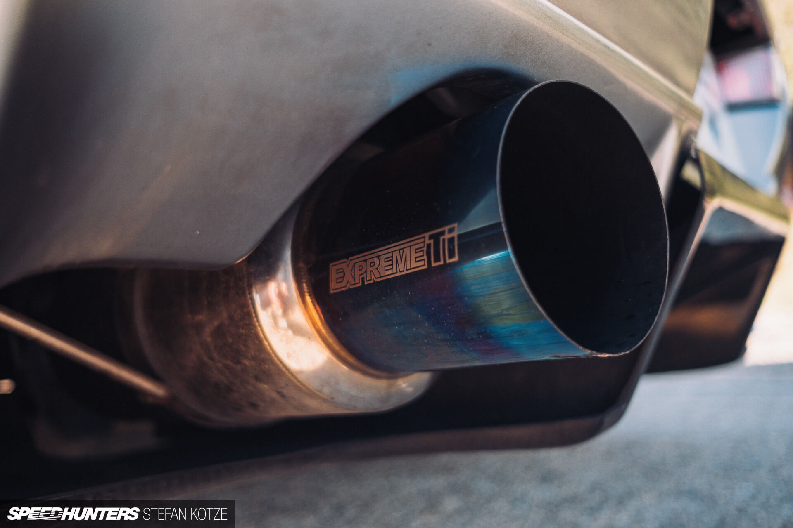
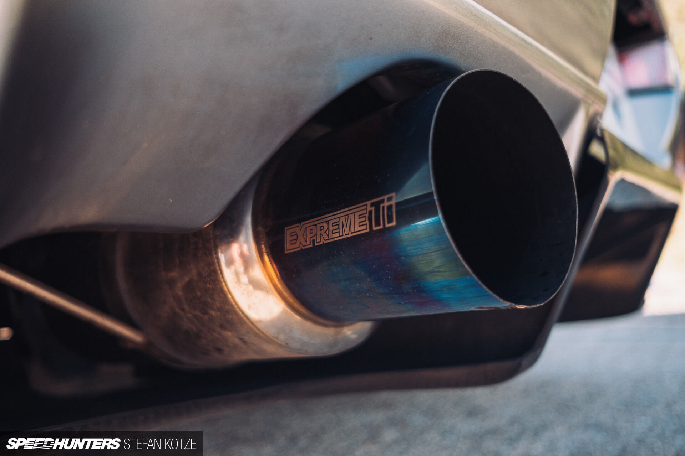

History
The Nissan Skyline GT-R is a sports car based on the Nissan Skyline range. The first cars named "Skyline GT-R" were produced between 1969 and 1972 under the model code KPGC10, and were successful in Japanese touring car racing events.
After a 16-year hiatus, the GT-R name was revived in 1989 as the BNR32 ("R32") Skyline GT-R. Group A specification versions of the R32 GT-R were used to win the Japanese Touring Car Championship for four years in a row. The technology and performance of the R32 GT-R prompted the Australian motoring publication Wheels to nickname the GT-R "Godzilla" in its July 1989 edition. Wheels then carried the name through all the generations of Skyline GT-Rs, most notably the R34 GT-R, which they nicknamed "Godzilla Returns" and described as "the best handling car we have ever driven". In their tests, it covered a quarter of a mile (402 metres) in 12.7 seconds from a standing start time and accelerated from 0–100 km/h (0–62 mph) in 4.4 seconds. It was one of the fastest accelerating production vehicles at the time.
The Skyline GT-R became the flagship of Nissan performance, showcasing many advanced technologies including the ATTESA E-TS all-wheel drive system and the Super-HICAS four-wheel steering. Today, the car is popular for import drag racing, circuit track, time attack and events hosted by tuning magazines. Production of the Skyline GT-R ended in August 2002.
It has become an iconic sports car as a grey import vehicle, and it has become notable through pop culture such as The Fast and the Furious, Initial D, Shakotan Boogie, Wangan Midnight, Need for Speed, Forza, Driving Emotion Type-S and Gran Turismo. In 2019, Nismo announced that it would resume production of spare parts for all generations of the Skyline GT-R, including body panels and engines.
The Nissan Skyline GT-R was named by BBC's Top Gear as the only true Japanese contribution in the line of supercars, and by Jeremy Clarkson as one of the best cars in the world.

Specs
The GF-BNR34 (R34) Skyline GT-R, GT-R V-Spec and GT-R V-Spec N1 models were introduced in January 1999. The R34 GT-R was shorter (from front to rear), and the front overhang was reduced as compared to its predecessor. The valve covers were painted glossy red (colour code Cherry Red Effect Z24 or X1020), as opposed to black in previous models.
A new feature on the R34 GT-R is a 5.8" LCD multifunction display on the center of the dashboard, which shows seven different live readings of engine and vehicle statistics such as turbocharger pressure (1.2 bar max), oil and water temperature, among others. The GT-R V-Spec model added two extra features to the display: intake and exhaust gas temperatures. Nismo Multi-function Displays (MFD) could be bought at an extra cost – they included a lap timer, a G-Force meter and an increase in boost pressure measurement to 2 bar. The R34 GT-R was made shorter in response to customer concerns, who thought its predecessor, the R33, was too bulky.
Like the R33, the new R34 GT-R V-Spec (Victory Specification) models come equipped with the ATTESA E-TS Pro system and an Active LSD at the rear, while standard GT-R models come with the non-Pro system and a conventional mechanical differential. The V-Spec model also had firmer suspension and lower ground clearance, thanks to front and side splitters, as well as a rear carbon fibre air diffuser, designed to keep air flowing smoothly under the car.
At the time of the R34's introduction, like the R32 and R33, Nissan introduced an R34 V-Spec N1 model. The R34 V-Spec N1 was equipped similar to the R32 and R33 N1 models – a homologation special. It was sold without air conditioning, audio equipment, rear wiper or boot lining, but ABS remained. The new R34 N1 was also given the new R34 N1 engine. Only 38 known R34 V-Spec N1 models were produced from the factory, 12 of which Nismo used for Super Taikyu racing. The rest were sold to various customers, mostly racing teams and tuning garages.
In October 2000, Nissan introduced the V-Spec II, replacing the V-Spec. The V-Spec II has increased stiffness in the suspension (even stiffer than the original V-Spec) and had larger rear brake rotors. It also comes equipped with a carbon fibre bonnet equipped with a NACA duct, which is lighter than the aluminium that all other GT-R bonnets are made from. Also different on the V-Spec II was an iridium center console and aluminium pedals. The seats were upholstered with black cloth rather than the gray cloth used on previous R34 GT-R models, and the amber turn lenses were replaced with white versions. With the exception of the carbon fibre bonnet, the standard trim level GT-R also received these updates. The V-Spec N1 was replaced with the V-Spec II N1. The same changes applied to the V-Spec N1 were applied to the V-Spec II N1, with the exception of the V-Spec II carbon bonnet which was now unpainted.
In May 2001, the M-Spec was introduced. It was based on the V-Spec II, but had special "Ripple control" dampers, revised suspension set up, stiffer rear sway bar and a leather interior with heated front seats. The 'M' on the M-Spec stood for Mizuno, who is the chief engineer of Nissan. The only other change was the removal of the carbon fibre bonnet which was replaced with the standard aluminium bonnet.
In February 2002, Nissan launched a final production model of the R34 GT-R called the Skyline GT-R V-Spec II Nür and the Skyline GT-R M-Spec Nür. The Nür was named after the famous German Nürburgring racetrack, where the Skyline was developed. In total, 1,003 units R34 GT-R Nür(s) were produced, 718 were V-Spec II Nürs and 285 were M-Spec Nürs. The Nür model featured an improved RB26DETT based on the N1 racing engine. The standard turbochargers were upgraded to larger versions with a slight increase in boost and the ceramic blades were replaced with steel versions. This has increased lag, but the turbo's durability was improved while being able to handle a bigger boost increase. The V-Spec II Nür is based on the regular V-Spec II model, and the M-Spec Nür was based on the regular M-Spec model. Other than the addition of the Nür engine, the Nür models also included a different colour of stitching on the interior trim, as well as a speedometer reading up to 300 km/h (186 mph), gold valve covers instead of red and a gold VIN plate instead of silver. Due to Japanese car industry norms at the time, the car was advertised as having 206 kW (280 PS; 276 hp), but it actually had over 246 kW (334 PS; 330 hp) when it left the factory.
In 1999, Nissan did a testing session at the Nürburgring Nordscheleife. Unofficially, the GT-R R34 ran a 7:52 minute lap around the track, driven by Nissan's test driver Kazuo Shimizu. The car broke the GT-R R33's record, which was the fastest road-legal series production vehicle and second fastest road-legal production vehicle around the track at the time.

Powertrain
The GT-R of the 1990s included a 2.6 L straight six-cylinder twin-turbo engine, producing 206 kW (280 PS; 276 hp). The standard turbochargers were of a hybrid steel/ceramic design, allowing them to spool up faster due to the light nature of the ceramic exhaust wheel.
The drive train delivered power to all four wheels using an electronically controlled all-wheel-drive system Nissan called the ATTESA E-TS. This system used two accelerometers mounted under the center console, which fed lateral and longitudinal inputs to the ECU. The ECU then controlled power delivery to the front wheels via an electronic torque split converter. In 1995, the ATTESA E-TS Pro was introduced as an option for R33 GT-R customers, and it came as standard equipment in GT-R V-Spec models. It was later standard equipment in all GT-R models for the R34 Skyline GT-R. The ATTESA E-TS Pro added an active limited slip differential, which was controlled by the onboard ATTESA computer. This was only for the rear differential, as the front differential remained as a normal Limited Slip Differential. The ATTESA E-TS Pro was also advertised in brochures as adding an electronically controlled 4-channel ABS brake system. Although it is not related to the all-wheel-drive system, it uses much of the same sensors and the same computer. The R32 could be switched from AWD to RWD by removing the 4WD fuse, but R33 and R34 models had to have the front tailshaft removed, or the centre diff could be depressurised for “towing mode” as specified in the owner’s manual.
The car also had computer-controlled all-wheel steering system referred to as Super-HICAS. The HICAS system activated when the vehicle exceeded 80 km/h (50 mph) and controlled the steering of the rear wheels in the same direction as the front to improve turn-in on entry to corners. This feature is often seen as more of a hindrance than help in race applications. The system tends to favor less experienced drivers, and it can make the rear suspension unstable during high-speed cornering.
While the published figures from Nissan were humbler, tests showed the car had a factory power output of closer to 243 kW (330 PS; 326 hp) at the flywheel. The lower published figure was Nissan's response to the need to abide by a gentlemen's agreement between the Japanese auto manufacturers not to introduce a car to the public exceeding 206 kW (280 PS; 276 hp) of power output.
Nissan RB26DETT engine
The RB26DETT engine is a 2.6 L (2,568 cc) inline-six engine manufactured by Nissan for use in the 1989-2002 Nissan Skyline GT-R. The RB26DETT engine block is made from cast iron, while the cylinder head is made from aluminium alloy, which contains a DOHC 4 valves per cylinder (24 valves in total) setup. The intake of the RB26DETT varies from other RB-series motors in that it has 3 sets of 2 throttle assemblies that are siamesed together instead of a single throttle body. The engine also uses a parallel twin-turbo system, using a pair of T25-type ceramic turbochargers set by the wastegates to limit boost pressure to 10 psi (0.69 bar), although the Skyline GT-R has a built-in boost restrictor to keep boost under 14 psi (0.97 bar).
The first 2.6 L RB26DETT was rated by Nissan at around 276 bhp (280 PS; 206 kW) at 6,800 rpm and 353 Nm; 260 lbf ft (36 kg m) at 4,400 rpm. By the end of production, power levels had gone up to around 320 PS (235 kW; 316 hp) at 6,800 rpm and 392 Nm; 289 lbf ft (40 kg m) at 4,400 rpm, not only because of developments and modifications to the engine, but also because of the "Gentlemen's Agreement" made between automakers to limit the "advertised" horsepower of any vehicle to 280 PS (276 bhp; 206 kW). While the published figures from Nissan were as quoted above, it has been known among enthusiasts that the car actually had a factory power output closer to the 320 PS (235 kW; 316 hp) figure. The RB26 is widely known and became quite popular for its strength and power potential thanks to its iron block and forged internals, making it a modification-friendly platform for tuners and aftermarket modifications in general.
Some factory features of the RB26DETT:
- 6 throttle body intake
- Solid lifter valve actuation, shim under bucket
- Belt driven cams
- CAS (crank angle sensor) driven off exhaust cam, tells ECU (engine control unit) crank/cam position
- Water cooled, oil-pressure-lubed turbos
- OEM cast pistons have cooling channels under the crowns (extra oil cooling to keep piston temperatures down)
- Piston oil squirters
- Sodium filled exhaust valves
- 8 Counter weighted crankshafts
- 'I' beam connecting rods
Besides minor cosmetic updates and ECU fine tunings, changes were made in the R34 generation to ball bearing T28 turbochargers as opposed to journal bearing turbos. The R34 GT-R turbos retained the ceramic exhaust turbine wheel. Models that had steel exhaust turbine wheels included the R32 Nismo, R32-R33-R34 N1 models and R34 Nür Spec Skyline GT-Rs.
The R34 GT-R’s RB26DETT engine specific differences to the R32 and R33 engines include:
- Candy red cam/coil pack covers
- Different coil cover emblem
- Plastic CAM gear cover
- Non-painted inlet plenum (apparently also a lighter casting)
- Hitachi CAS (Crank angle sensor) has different drive fitting compared to earlier R32 and R33 exhaust cams
- Igniter built into coil packs (no igniter pack on the rear of coil cover)
- Ball bearing turbochargers with ceramic exhaust turbine wheels
- Stainless steel dump pipes
- Sump front differential has a different ratio (3:55)
- Different diameter coolant/heater pipes on intake side of block
- Dual mass flywheel

Gallery


 



Videos
Nissan Skyline R34 GT-R V-Spec II Review by Throttle House
Nissan Skyline R34 GT-R Review by Jeremy Clarkson
Nissan Skyline R34 GT-R V-Spec Review by Donut Media
800hp Nissan Skyline R34 GT-R by Speedhunters

About
If you're of a certain age group (my age group), you grew up playing racing games on PlayStation, watching The Fast and the Furious and you were absolutely obsessed with Initial D.
In all three of those franchises, the Nissan Skyline GT-R plays a pivotal role.
It was the best car in Gran Turismo 2.
Paul Walker drove one in 2 Fast 2 Furious.
And the God Foot was a menace on the mountain.
It was a huge deal.
But, strangely, there aren’t many websites specifically dedicated to the Nissan Skyline R34 GT-R. I hope this website helps changing that.
The creator of this website is a wannabe car guy, a JDM aficionado, and he has two dreams: 1) to become a web developer and create websites for the automotive industry and 2) one day, own a Nissan Skyline R34 GT-R. Both seem fairly unachievable at this stage, but the hairs on the back of his skinny little car nerd neck stand on end just by thinking of it. This website is the start of his dream journey. Wish him luck.
May cars always be with you.
Acknowledgements
I would like to thank Wikipedia for most of the written content on this website, and I would especially like to thank Stefan Kotze, the best automotive photographer in the world and whose work I greatly admire, for all the beautiful photos of a Nissan Skyline R34 GT-R that were published on Speedhunters' website and that were extensively used on this website. Without them, this website might not exist.